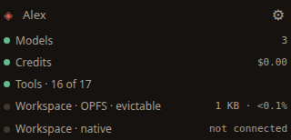

Primeiros passos
O Daimond é um espaço de trabalho com agentes de IA que roda inteiramente no seu navegador. Não há conta em servidor nenhum nem app para instalar: seus chats, chaves e arquivos vivem só neste dispositivo.
Nada sai do seu dispositivo a menos que você mande. O Daimond alcança o mundo lá fora só a seu pedido: quando você conecta seu próprio provedor de modelos, e suas mensagens vão para esse provedor; quando você gasta créditos para rodar um modelo, buscar uma página ou sincronizar e-mail; e quando você vincula um segundo dispositivo. Todo o resto fica neste navegador, e Contas & privacidade expõe exatamente o que vai para onde, e como você mesmo pode conferir.

O caminho mais curto até a primeira resposta
Três passos. Cada um aponta para um controle que você vê na tela.
-
Criar uma conta
Na primeira execução, o Daimond propõe proteger este dispositivo com uma frase-senha. Digite seu nome e uma frase-senha, e então escolha Criar conta. A frase-senha criptografa as chaves e as credenciais de e-mail que você guardou, e é a sua identidade no dispositivo. Ela nunca é enviada a lugar nenhum, então guarde-a em um lugar seguro — se você a perder, os dados criptografados se vão.
Você também pode escolher Agora não e definir uma frase-senha depois, mas conectar a chave de um provedor funciona melhor quando já há uma frase-senha para protegê-la.
-
Conectar um modelo, ou comprar créditos
Um daimon precisa de um modelo com que pensar. Há duas formas de lhe dar um, ambas a partir do painel de administração no canto inferior esquerdo:
- Traga sua própria chave. Abra a linha Modelos e escolha + Adicionar provedor, selecione um provedor, cole a chave de API dele e marque com a estrela um modelo padrão. Suas mensagens então vão direto para esse provedor, na sua própria conta.
- Compre créditos. Abra a linha Créditos e compre um pacote. O Daimond roda o modelo para você, sem chave de provedor para administrar e sem assinatura.
Qualquer um dos dois basta. Veja Modelos & créditos para os detalhes.
-
Começar um chat
Escolha Novo chat no alto da barra lateral (o ＋ ao lado de Chats), digite uma mensagem na caixa embaixo do painel central e envie-a com ➤. Esse painel central é onde você fala com o daimon, e o Daimond é construído em torno dessa conversa.
O que você está vendo
A tela tem três zonas. A barra lateral à esquerda lista aquilo em que você está trabalhando e, abaixo de um divisor móvel, o painel de administração. O palco no centro abriga a conversa e o que você estiver lendo ao lado dela. O dock à direita abriga as fontes de onde você puxa — o e-mail, o espaço de trabalho, os agentes em execução e seus gastos.
No alto, cada painel tem um chip em que você clica para abri-lo ou fechá-lo, e um botão na ponta direita define o tema, o tamanho do texto e a grade do dock. Nenhum dos dois é necessário até a primeira resposta; ambos estão detalhados em A interface.

É no painel de administração que o Daimond é configurado e onde ele diz quanto está custando. Cada linha é um botão que abre aquilo que ela nomeia: sua identidade, Modelos, Créditos, Ferramentas, Versão, e o armazenamento que seu espaço de trabalho está usando. A próxima página percorre cada parte da tela.